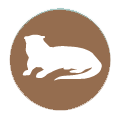
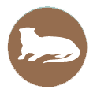
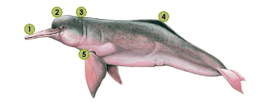

Bienvenido
Restablecer
Contraseña
Restablecer
Contraseña


Amigo
$250.000/año (USD $100)
Beneficios
- Imagenes en alta calidad de animales y paisajes del Amazonas.
- Diploma de acreditación como miembro del programa.
- Certificado de donación.
- Una publicación sobre fauna o biodiverssidad.
¿Cómo nos ayuda tu aporte?
- Con los gastos dentro del proceso de rehabilitación de fauna explotada y maltratada
- Ayudas con el monitoreo y seguimiento de los animales liberados
- Con los diferentes procesos de investigación de las especies amenazadas y sus hábitats
- Con la elaboración de material para los talleres de sensibilización y educación ambiental.
- En la gestión corporativa e interinstitucional para la reducción del tráfico y la tenencia ilegal de fauna en Colombia.
Adquirir plan
Plan
Amigo
$250.000/año (USD $100)
Pepe Martínez, Colombia
10/03/92
pepethebest@yahoo.com
Dona con
Aquí
Plan
Amigo
$250.000/año (USD $100)
¡Gracias Pepe Martínez!
Con tu apoyo ayudas a
la conservación de
estas maravillosas
especies
Patrocinador
$850.000/ año (USD $275)
Beneficios
- Recibe el mismo paquete de la membresía AMIGO.
- Un libro de colección.
-Imagen a color de la especie, con la información respectiva.
- Hospedaje para dos personas (3 días/2 noches) en la Estación Biológica Fundación Omacha en Puerto Nariño (Amazonas) o en la Reserva Natural Bojonawi en Puerto Carreño (Vichada) para conocer los hermosos ecosistemas donde habitan estas especies y acompañar a los investigadores en una jornada de campo *(No incluye alimentación, transportes internacionales, nacionales y locales, ni otros gastos).
¿Cómo nos ayuda tu aporte?
- Con los gastos dentro del proceso de rehabilitación de fauna explotada y maltratada
- Ayudas con el monitoreo y seguimiento de los animales liberados
- Con los diferentes procesos de investigación de las especies amenazadas y sus hábitats
- Con la elaboración de material para los talleres de sensibilización y educación ambiental.
- En la gestión corporativa e interinstitucional para la reducción del tráfico y la tenencia ilegal de fauna en Colombia.
Adquirir plan
Plan
Patrocinador
$250.000/año (USD $100)
Pepe Martínez, Colombia
10/03/92
pepethebest@yahoo.com
Dona con
Aquí
Plan
Patrocinador
$250.000/año (USD $100)
¡Gracias Pepe Martínez!
Con tu apoyo ayudas a
la conservación de
estas maravillosas
especies
Guardián
$1.250.000+ /año (USD$450)
Beneficios
- Recibe el mismo paquete de las membresias anteriores
- Derecho a recibir todas las publicaciones strong lanzadas por la fundación durante 6 meses.
¿Cómo nos ayuda tu aporte?
- Con los gastos dentro del proceso de rehabilitación de fauna explotada y maltratada
- Ayudas con el monitoreo y seguimiento de los animales liberados
- Con los diferentes procesos de investigación de las especies amenazadas y sus hábitats
- Con la elaboración de material para los talleres de sensibilización y educación ambiental.
- En la gestión corporativa e interinstitucional para la reducción del tráfico y la tenencia ilegal de fauna en Colombia.
Adquirir plan
Plan
Guardián
$1.250.000+ /año (USD$450)
Pepe Martínez, Colombia
10/03/92
pepethebest@yahoo.com
Dona con
Aquí
Plan
Guardián
$1.250.000+ /año (USD$450)
¡Gracias Pepe Martínez!
Con tu apoyo ayudas a
la conservación de
estas maravillosas
especies
 

En este mapa podrás encontrar el seguimiento a estas 3 especies que puedes adoptar, te actualizaremos con la información actual de su hábitat, el número de especímenes que hemos podido registrar y el estado en que se encuentra sus reservas de comida.
Arare
Adopta simbólicamente y sigue a tu nuevo amigo.
¿A quién quieres conocer?


Tus Datos Personales
Planes de Adopción
Conoce nuestros tres planes de adopción y cómo con cada uno de ellos ayudas a tu nuevo amigo.

Adopta
un animal
Nutria
Nombre científico: Pteronura brasiliensis
Orden: Carnivora
Familia: Mustelidae
Descripción General
La nutria gigante mide entre 1.5 y 2 metros, de los cuales 45 a 65 centímetros corresponden a la cola, la cual es aplanada hacia la punta. Pueden pesar entre 25 y 32 kilos. Su pelaje es de color café oscuro y tiene manchas de color claro amarillento en el cuello, con un patrón único por cada individuo lo cual sirve para identificarlos. Estas manchas son más grandes en los machos. Los dedos de las manos y pies están unidos por una membrana. Sus ojos son grandes, de color café oscuro y el hocico es redondeado.

1. Ojos grandes color café oscuro
2. Hocico redondeado
3. Manchas color claro amarillento patrón único por cada individuo para identificarlos
4. Dedos de las manos y pies unidos por una membrana
5. Cola aplanada hacia la punta
Distribución
En Colombia existe evidencia de su presencia en la mayoría de departamentos de la Amazonia y el Orinoco: en los ríos Tomo y Tuparro del PNN El Tuparro, en los ríos Bita y Orinoco, la parte media del río Meta y en el río Arauca.
Se han logrado observaciones en los ríos Caquetá, Cahuinarí, Bernardo, Mirití y Apaporis. Se han observado grupos en los ríos Inírida y Guaviare y se han visto algunos individuos en la zona de inundación de los lagos Tarapoto y el río Loreto Yacu.
Hábitat
Se encuentra, generalmente, en pequeños tributarios y sistemas lagunares de aguas negras. En la Orinoquia se le ha visto en los ríos de aguas blancas, como el Orinoco y el Meta.
Amenazas
Las nutrias fueron cazadas intensamente para el comercio internacional de pieles, entre 1940 y 1970, esto se menciona como la causa más importante de la gran disminución de la especie.
En algunas regiones, como el río Mirití Parana y la parte media del río Meta, los pescadores consideran a las nutrias como una seria competencia por el recurso pesquero.
En el departamento del Vichada se presenta el mercado ilegal de venta de crías como mascotas. En la Selva Mataven, al sur del Vichada, y en el bajo río Inirida, Guainía, la especie enfrenta una amenaza directa por parte de las comunidades indígenas de la zona: se afirma que las nutrias gigantes son un enemigo ya que comen demasiado pescado y ensucian las aguas de los ríos y caños con sus heces.
Quiero adoptar
Adopta
un animal
Manatí
Nombre científico: Trichechus inunguis
Orden: Sirenia
Familia: Trichechidae
Descripción General
Este manatí es el más pequeño de todos. El mayor tamaño registrado es de 2.8 metros y el peso máximo es de 480 kilos. Al nacer miden entre 85 y 105 centímetros, y pesan entre 10 y 15 kilos.
Su cuerpo tiene una forma más o menos cilíndrica y más fusiforme (forma de huso) que en las otras especies de manatíes. Su cabeza es grande, los ojos son pequeños y las aberturas de los oídos son diminutas. Tiene un par de fosas nasales provistas de válvulas, que se cierran cuando se sumergen, y están ubicadas en la parte superior de la cabeza.
La piel es suave, regular y con apariencia de goma, generalmente es de color gris oscuro o negro. La mayoría de los manatíes en el Amazonas tienen una mancha clara muy sobresaliente en la región ventral ubicada hacia el centro del pecho o del abdomen. Los adultos tienen entre siete u ocho dientes en cada media mandíbula – maxila (ramus), los cuales se reemplazan a medida que se desgastan: sale un diente nuevo en la parte posterior y la hilera se desplaza hacia adelante.
1. Hocico cuadriforme, cubierto de gruesos pelos sensoriales con labios suaves y muy móviles
2. Fosas nasales que se cierran como válvulas al sumergirse debajo del agua
3. Glándula mamaria debajo de cada aleta pectoral en el caso de las Hembras ♀
4. Tres ó cuatro uñas en el extremo de las aletas pectorales
5. Aleta caudal amplia y comprimida
Distribución
Su presencia se restringe a la cuenca del Amazonas, desde la Isla de Marajó en Brasil hasta los ríos Ucayali y Napo en Perú y Ecuador.
En Colombia se encuentra en los ríos Amazonas, Putumayo (probablemente desde Arica aguas abajo), Caquetá (abajo del raudal de Córdoba) y en el bajo Apaporis, especialmente en el lago Taraira.
Hábitat
Se encuentra restringido a ambientes fluviales y lacustres (perteneciente o relativo a los lagos), donde encuentra plantas acuáticas para su consumo. Es un animal totalmente herbívoro.
Amenazas
Esta especie ha sido sometida a una intensa caza. Al principio se cazaba para comercializar aceite y carne, entre 1935 y 1954 se comercializaba su piel y actualmente se caza por motivos de subsistencia de las comunidades que habitan en su zona de distribución. El T. inunguis es una especie muy susceptible a la caza porque su tasa de reproducción es muy baja.
Quiero adoptar
Adopta
un animal
Delfín
Nombre científico: Inia geoffrensis
Orden: Cetacea
Familia: Platanistidae
Descripción General
Es el delfín de río más grande, su cuerpo es robusto, flexible y poco hidrodinámico; tiene un hocico largo y estrecho con más o menos 106 dientes (es de tipo heterodonta, es decir que tiene dientes incisivos y molares, a diferencia de los delfines marinos que es homodonta).
No presenta un dimorfismo sexual marcado, pero el macho es un poco más grande: puede llegar a medir hasta 2.8 metros y pesar hasta 180 kilos. Su coloración es variable, pero generalmente las crías son de un gris oscuro y a medida que crece puede variar entre gris/rosado o mantener solo el gris.
Cuando estos animales realizan actividad física, su coloración rosada se incrementa como un mecanismo para regular la temperatura; comienza a fluir más sangre a los vasos sanguíneos periféricos aumentando el tono rosado. Una vez disminuye la actividad, la coloración original retorna. No todos los delfines cambian de gris a rosado, y esto parece estar explicado por características fenotípicas.
La aleta dorsal es baja y se prolonga a manera de quilla a lo largo del dorso, las aletas pectorales son grandes y tienen una adaptación en la escápula que les permite un ángulo pronunciado de rotación. A diferencia de la mayoría de los delfines de mar, en el Inia las vértebras cervicales están libres, lo que les permite rotar la cabeza de un lado a otro. Los ojos son pequeños, pero funcionales.
El melón es pronunciado, especialmente en adultos, y sirve como un direccionador acústico para las ondas que producen ecolocalización.
1. Hocico largo y estrecho con 106 dientes
2. Melón pronunciado
3. Vértebras cervicales libres
4. Aleta dorsal baja y prolongada en forma de quilla
5. Aletas pectorales grandes con ángulo pronunciado de rotación
Distribución
Esta especie se encuentra ampliamente distribuida en las cuencas de los ríos Amazonas, Orinoco y en la mayoría de sus tributarios, pero está limitada en las cabeceras de los mismos por raudales y cascadas.
En la Amazonia colombiana habita en los ríos Caquetá, Apaporis, Mirití Paraná, Cahuinarí, Putumayo, Igará Paraná, Cotué, Amazonas y en una gran cantidad de tributarios y lagos, como los lagos de Tarapoto y La Paya; y en la Orinoquia se encuentra en los ríos Meta, Guayabero, Yucao, Manacacías, Tillavá, Planas, Vichada, Tomo, Tuparro, Guaviare, Inírida, Orinoco, Bita, Arauca, Cravo Norte y Casanare.
Hábitat
Esta especie se encuentra asociada con frecuencia a sistemas donde confluyen varios ríos, ya que estas áreas tienen concentraciones de peces: grandes ríos, tributarios, lagunas, confluencias y el bosque inundado.
Amenazas
En Colombia, las principales amenazas para esta especie son las interacciones negativas con los pecadores: individuos atrapados en mallas de monofilamento y cacería o envenenamiento para evitar que el delfín se acerque a las mallas, porque es percibido por los pescadores como una fuerte competencia por el recurso pesquero.
Quiero adoptar